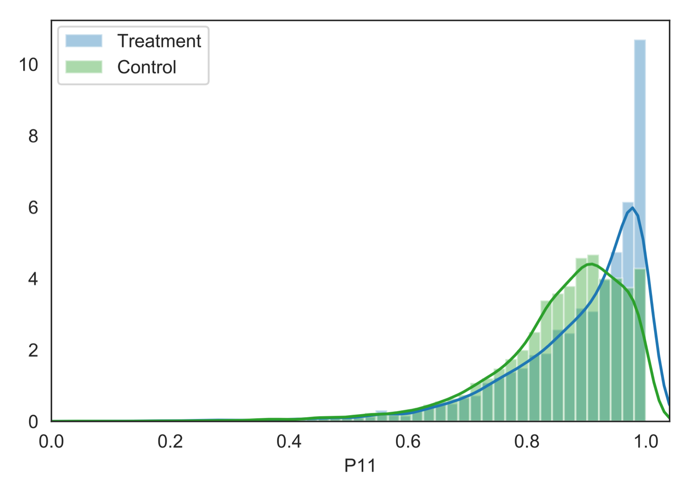
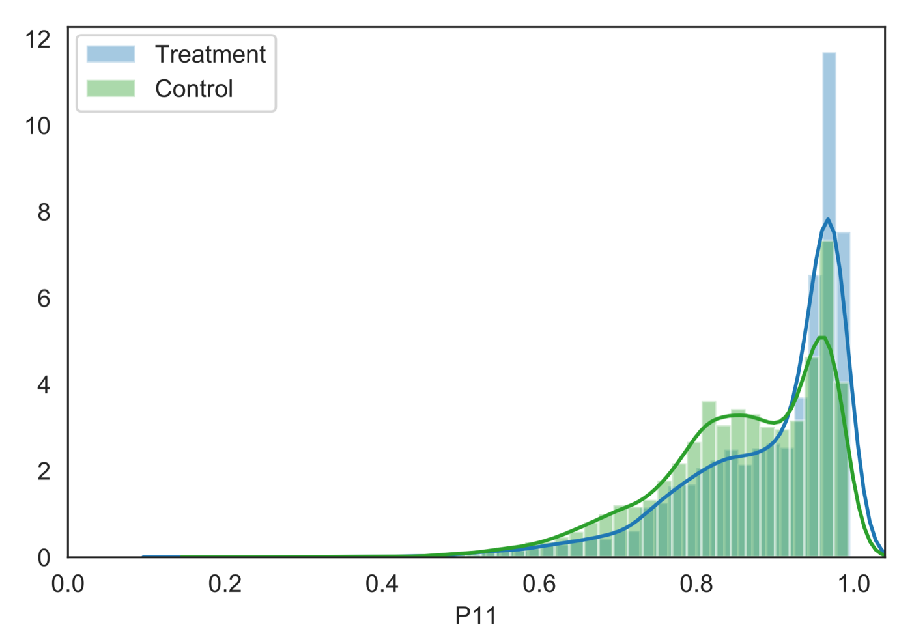

- \(t > \gamma + \delta P_{11}\)処置すべきかどうかの境界は推定 ITE \(t\) と処置したときの陽性確率 \(P_{11}\) の一次式になる。切片と傾きは費用と便益だけで決まる。
- 24 組中 24 組処置すると陽性時の便益が 1.2 倍になる設定で、ECP ランカーの平均因果利益が ITE ランカーを上回った組合せの数（Table 3）。
- 24 組中 7 組便益の大小を逆にした設定では、ECP が上回ったのは 7 組にとどまった。論文は、処置群の選び方に偏りがあり確率の推定が較正されていないためと推測している。
ITE の大きい順に処置する方法は、処置の費用も結果の便益も見ていない
論文は、処置 \(W\) と結果 \(Y\) がともに二値の場合（double binary causal classification）を扱う。顧客ごとに割引を出すか、引き止めキャンペーンの対象にするかを決める場面である。因果分類モデルは処置したとき・しないときの陽性確率 \(P_{11} = P(Y{=}1\mid x, W{=}1)\) と \(P_{10} = P(Y{=}1\mid x, W{=}0)\) を推定し、その差 \(t = P_{11} - P_{10}\) を推定 ITE とする。
費用を考えなければ、陽性の割合を最大にするには \(t > 0\) の全員を処置すればよい。処置できる数に上限があるときは、\(t\) の大きい順に並べて上から選ぶ。Qini 曲線などの評価指標もこの並べ方を前提にしている。論文は、ITE の推定法は数多く提案されてきた一方、処置の費用と結果の便益を入れて処置を決める一般的な枠組みは定式化されていないと述べ、その枠組みを作ることを目的にしている。
処置した場合と処置しない場合の期待利益の差を「期待因果利益」と呼ぶ
費用と便益は 2 つの表で与える。結果 \(i\) と処置 \(j\) の組合せごとの便益 \(b_{ij}\) と費用 \(c_{ij}\) である。費用と便益はクラスごとに一定で、個人ごとには変わらないと仮定している。処置 \(w\) を選んだときの期待利益は次のとおりである。
期待因果利益はその差 \(E[\dot P\mid x] = E[P\mid x,1] - E[P\mid x,0]\) で、これが正の対象者を処置する。論文によると、同じ式はそれまで Provost と Fawcett の教科書（第 11 章）に顧客維持の例として一度出てくるだけだった。論文はこの期待値の枠組みと Elkan の費用考慮型分類を、因果分類へ広げている。
分析を簡単にするため、論文は処置しない場合の費用と陰性の便益をゼロとおく（\(c_{00}=c_{10}=b_{00}=b_{01}=0\)）。残るのは、処置しないで陽性のときの便益 \(b_{10}\)、処置して陽性のときの便益 \(b_{11}\)、処置の費用 \(c_{01}, c_{11}\) である。
処置すべき範囲の境界は、推定 ITE と処置したときの陽性確率の一次式になる
期待因果利益がゼロになる条件を整理すると、決定境界は \(P_{11}\) の一次式になる。簡単にした設定での切片 \(\gamma'\) と傾き \(\delta'\) は次のとおりである。
費用も便益もゼロにすると境界は \(t > 0\) に戻る（命題 1）。処置しても陽性確率が変わらない通常の分類（\(t = 0\)）に当てはめると、Elkan の費用考慮型の閾値と一致する（定理 1）。論文はこれを、通常の分類が因果分類の特別な場合であることの裏づけとしている。
境界の形から、論文は 2 つの条件を導いている。
- 因果的な採算条件：処置すべき対象者がいるのは \(c_{11} < b_{11}\) のとき、かつそのときに限る（定理 2）。陽性になっても処置の費用が便益を上回るなら、誰も処置しない。
- 因果的なボーナス条件：\(c_{11} < b_{11} - b_{10}\) のとき、かつそのときに限り、推定 ITE が負の対象者も処置すべき範囲に入る（定理 3）。処置すると陽性時の便益が費用以上に増えるなら、陽性確率が少し下がっても処置したほうが得になりうる。便益が処置によらない（\(b_{11}=b_{10}\)）多くの場面では、この条件は成り立たない。
処置できる数が限られるときは、期待因果利益の大きい順に選ぶ
予算や人手の都合で処置できる数に上限があると、境界より上の全員は処置できない。論文は境界の傾きを保ったまま切片を上げ、上限の人数に収まるまで絞り込む方法を考える。これは境界からの符号つき距離で並べることにあたる。
論文は、この距離が期待因果利益に比例することを示し（命題 3）、距離の順に並べる方法を ECP（expected causal profit）ランカー、従来の並べ方を ITE ランカーと呼ぶ。処置できる数が \(r\) なら、ECP ランカーの上位 \(r\) 人を選べばよい。なお arXiv v1 の証明では、期待因果利益を \(t - \delta P_{11} - \gamma\) と等式で書いているが、展開すると \(\gamma, \delta\) の分母（簡単にした設定では \(b_{10}\)）が掛かった形になる。比例するという結論は変わらない。
上限が金額で与えられる場合について、論文は次の問題も示している。ECP の順に並べた対象者（期待因果利益が正の人だけ）を上から \(T\) 人選ぶとき、期待される費用 \(\sum_{j\le T} \bigl[(1-P_{11,j})\,c_{01} + P_{11,j}\,c_{11}\bigr]\) が予算 \(m\) 以内に収まる最大の \(T\) を求める。
合成データ 1 つとマーケティング施策のデータ 3 つで、2 通りの費用・便益の設定を比べた
データは causalml で生成した合成データ（10,000 件、処置群と対照群が半々）、Criteo の広告データから抜き出した 11,647 件、金融機関の解約防止キャンペーン（Bank、10,043 件、変数 160 個）、Hillstrom のメール施策データから抜き出した 14,232 件である。Bank では解約しないことを陽性としている。
費用・便益は 2 通り置いた。設定 1 は処置して陽性のときの便益を処置しないで陽性のときの 1.2 倍とし（\(b_{11}=120,\ b_{10}=100\)）、設定 2 は逆にする（\(b_{11}=100,\ b_{10}=120\)）。処置の費用は結果によらず \(c_{01}=c_{11}=10\) である。ITE の推定には T-learner、S-learner、causal forest を使い、基本モデルにロジスティック回帰（LR）と XGBoost を組み合わせた。評価指標は Qini 係数、平均因果利益（すべての処置割合で平均した 1 人あたりの因果利益）、最大因果利益で、5 分割交差検証で比べている。
以下の数値は arXiv v1（2021 年 1 月 5 日、題名 “To do or not to do: cost-sensitive causal decision-making”）の本文と表による。EJOR 掲載版の本文は自動取得できなかったため照合していない。掲載版とは題名と著者の順番が異なり、内容も改訂されている可能性がある。所属は arXiv v1 の表記である。
arXiv v1 の Table 1 と本文では、一部の数値が食い違っている。Criteo について本文は対照群の陽性率を 37%、処置群を 41%、全体の効果を 4% とするが、表では対照群 0.04、全体の効果 0.37 となっている。Bank について本文は解約率を対照群 25%、処置群 13% とするが、表ではこれが陽性（解約しない）の割合の行に載っている。
便益が処置で増える設定では、ECP ランカーが 24 組すべてで平均因果利益を上げた
設定 1 では、データ・ITE の推定法・基本モデルの 24 組すべてで、ECP ランカーの平均因果利益が ITE ランカーを上回った（Table 3）。たとえば Bank の T-learner + XGBoost では 1 人あたり 9.96 から 12.45 に、S-learner + XGBoost では 2.03 から 10.00 に上がった。論文はこれを特筆すべき結果としている。
設定 2 では、ECP が上回ったのは合成データの 6 組と Hillstrom の S-learner + XGBoost の計 7 組で、マーケティングの 3 データでは残りすべてで ITE ランカーが上回った。論文自身も、これは予想外の結果だと述べている。最大因果利益（Table 4）もおおむね同じ傾向だった。
費用を見ない指標である Qini 係数でも、設定 1 のマーケティング 3 データではほぼ一貫して ECP ランカーが上回り、設定 2 では ITE ランカーが上回った（Table 2）。合成データでは、両方の設定でほぼ一貫して ITE ランカーの Qini 係数が高かった。論文は、平均因果利益の差の大きさは任意に置いた費用・便益の値によると注意している。
ECP ランカーが働くには、処置したときの陽性確率がきちんと較正されている必要がある
設定 2 で効果が出なかった理由を、論文は次のように分析している。費用を無視して近似すると、因果利益は「処置群のうち選ばれた陽性者の割合 × \(b_{11}\)」から「対照群のうち選ばれた陽性者の割合 × \(b_{10}\)」を引いた形になる。ECP ランカーは、設定 1 では \(P_{11}\) の大きい人を、設定 2 では小さい人を優先する。処置群と対照群が無作為に分かれていれば、選ばれる陽性者は両群でほぼ同じだけ増減するはずで、設定 1 では \(b_{11}\) が大きいぶん、設定 2 では \(b_{10}\) が大きいぶん、利益が上がる。
ところが Bank では、ECP ランカーによる陽性者の増え方（設定 1）も減り方（設定 2）も、処置群のほうが対照群より大きかった。そのため設定 1 では利益が予想以上に上がり、設定 2 では逆に下がった。論文はこの原因を選択バイアスと推測し、3 つの根拠を挙げる。第一に、Bank の処置群と対照群で \(P_{11}\) の推定値の分布が大きく異なる（図3）。第二に、その分布から、陽性になりやすい顧客を優先して処置群に選んだ形跡がうかがえる。第三に、無作為化されている合成データでは、両群の陽性者の増え方がほぼ同じだった。
論文は、\(P_{11}\) と \(t\) の推定値が較正されていることが ECP ランカーの前提だと結論づけている。そのうえで、選択バイアスに対処できる推定法や、推定値を事後に較正する方法の検討を今後の課題に挙げている。


図3 Bank データの処置群と対照群での \(P_{11}\) 推定値の分布。左がロジスティック回帰、右が XGBoost（論文 Fig. 4、arXiv v1、CC BY 4.0）。
予算は処置できる数の上限として扱い、期待因果利益の順に上から選ぶ
この論文が推定に使うのは、推定 ITE \(t\) と処置したときの陽性確率 \(P_{11}\) である。どちらも既存の因果分類モデル（T-learner など）の出力をそのまま使い、費用と便益は後処理として入れる二段階の構成になっている。処置と結果はともに二値で、費用と便益はクラスごとに一定である。処置の費用は結果によって変えられる（\(c_{01}\) と \(c_{11}\)）ので、陽性になったときだけかかる費用も表せる。
予算制約は処置できる数の上限 \(r\) か、期待費用の上限 \(m\) として扱う。どちらの場合も、期待因果利益の大きい順に並べて上から選ぶ。予算の上限による割り当て自体は最適化問題として解いておらず、実験でも予算を固定した比較はしていない。評価は平均因果利益と最大因果利益（すべての処置割合での平均と最大）による。
ROI 順の割り当て（ナップザック問題の連続緩和）との関係は次のとおりである（解説者の注）。論文の実験のように \(c_{01} = c_{11}\) なら、1 人あたりの期待費用は全員同じなので、期待因果利益の順と「期待因果利益 ÷ 期待費用」の順は一致する。\(c_{01} \ne c_{11}\) のときは期待費用 \((1-P_{11})\,c_{01} + P_{11}\,c_{11}\) が人によって変わるため、期待費用の上限 \(m\) のもとでは、ECP の順と ROI の順で選ばれる人が異なりうる。論文はこの違いには触れていない。
@article{verbeke2023todo,
title = {To do or not to do? Cost-sensitive causal classification with individual treatment effect estimates},
author = {Verbeke, Wouter and Olaya, Diego and Guerry, Marie-Anne and Van Belle, Jente},
journal = {European Journal of Operational Research},
volume = {305},
number = {2},
pages = {838--852},
year = {2023},
doi = {10.1016/j.ejor.2022.03.049}
}